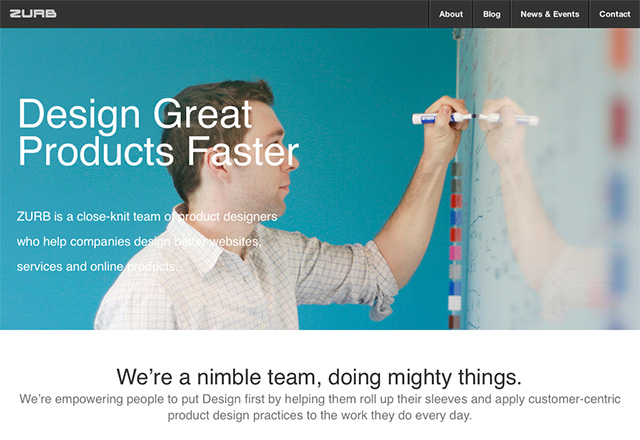

testing for css
Basic Usage
Demonstrates basic usage of the plugin.


Vertical Orientation
Demonstrates sliding up and down.
Side by side
Using multiple comparisons at once.



Data Journalism
testing for css
Demonstrates basic usage of the plugin.
Demonstrates sliding up and down.
Using multiple comparisons at once.